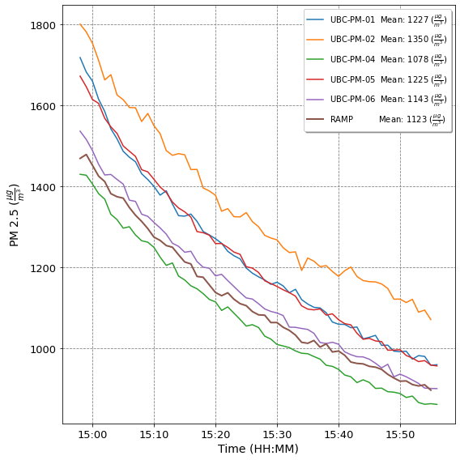
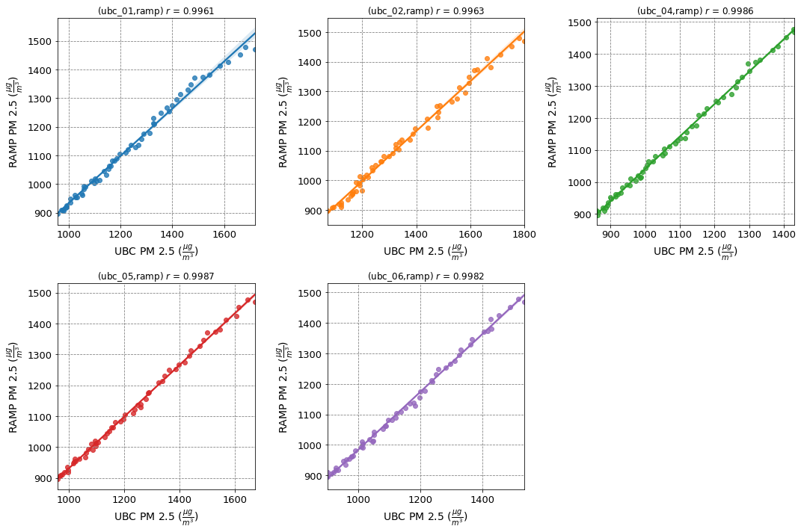

Static test¶
Calibrate the UBC PM senors to the RAMP PM sensor using simple linear regression (MLR)
Load python modules and set inputs¶
import context
import numpy as np
import pandas as pd
import seaborn as sns
from pathlib import Path
import statsmodels.api as sm
import matplotlib.pyplot as plt
from matplotlib.dates import DateFormatter
from sklearn import linear_model, feature_selection
from utils.pm import read_ramp
from context import data_dir
file_date = "220515"
ss = ["2022-05-15 14:58:00", "2022-05-15 15:56:00"]
# ss = ['2022-05-17 12:00:00', '2022-05-17 15:01:00']
# ubc_pms = ["%.2d" % i for i in range(1, 7)]
ubc_pms = ["01", "02", "04", "05", "06"]
******************************
context imported. Front of path:
/Users/rodell/Documents/Arduino
/Users/rodell/Documents/Arduino/docs/source
******************************
through /Users/rodell/Documents/Arduino/docs/source/context.py -- pha
read data for the RAMP¶
ramp_pathlist = sorted(Path(str(data_dir) + f"/RAMP/").glob(f"{file_date}*.TXT"))
ramp_df = read_ramp(ramp_pathlist)
hours = pd.Timedelta("0 days 01:07:00")
ramp_df.index = ramp_df.index - hours
ramp_df = ramp_df.sort_index()[ss[0] : ss[1]]
ramp_df = ramp_df.resample("1Min").mean()
read data for the UBC pm sensors¶
ubc_pathlist = np.ravel(
[
sorted(Path(str(data_dir) + f"/UBC-PM-{pm}/").glob(f"20{file_date}*.TXT"))
for pm in ubc_pms
]
)
def read_ubcpm(path):
path = str(path)
print(path)
df = pd.read_csv(path)
del df["rtctime"]
df["test"] = "20" + file_date + "T" + df["millis"]
df["test"] = pd.to_datetime(df["test"])
pm_date_range = pd.Timestamp("20" + file_date + "T" + path[-12:-4])
diff = pm_date_range - df["test"][0]
df["datetime"] = df["test"] + diff
df = df.set_index(pd.DatetimeIndex(df["datetime"]))
df = df.sort_index()[ss[0] : ss[1]]
df = df.resample("1Min").mean()
return df
ubc_dfs = [read_ubcpm(path) for path in ubc_pathlist]
/Users/rodell/Documents/Arduino/data/UBC-PM-01/20220515-14:41:26.TXT
/Users/rodell/Documents/Arduino/data/UBC-PM-02/20220515-14:45:40.TXT
/Users/rodell/Documents/Arduino/data/UBC-PM-04/20220515-14:51:17.TXT
/Users/rodell/Documents/Arduino/data/UBC-PM-05/20220515-14:52:08.TXT
/Users/rodell/Documents/Arduino/data/UBC-PM-06/20220515-14:54:02.TXT
Plot time series¶
Plot timesires of the 1 min rolling average
fig = plt.figure(figsize=(8, 8)) # (Width, height) in inches.
fig.autofmt_xdate()
ax = fig.add_subplot(1, 1, 1)
for i in range(len(ubc_dfs)):
ax.plot(
ubc_dfs[i].index,
ubc_dfs[i]["pm25_env"],
label=f'UBC-PM-{ubc_pms[i]} Mean: {int(ubc_dfs[i]["pm25_env"].mean())}'
+ r" ($\frac{\mu g}{m^3}$)",
)
ax.plot(
ramp_df.index,
ramp_df["pm25"],
lw=2,
label=f'RAMP Mean: {int(ramp_df["pm25"].mean())}'
+ r" ($\frac{\mu g}{m^3}$)",
)
xfmt = DateFormatter("%H:%M")
ax.xaxis.set_major_formatter(xfmt)
ax.set_xlabel("Time (HH:MM)", fontsize=14)
ax.set_ylabel(r"PM 2.5 ($\frac{\mu g}{m^3}$)", fontsize=14)
ax.tick_params(axis="both", which="major", labelsize=13)
ax.xaxis.grid(color="gray", linestyle="dashed")
ax.yaxis.grid(color="gray", linestyle="dashed")
ax.legend(
loc="upper right",
# bbox_to_anchor=(0.48, 1.15),
ncol=1,
fancybox=True,
shadow=True,
)
fig.tight_layout()

Combine PM 2.5 data for all senors (UBCs and RAMP)into one df This dataframe will be use to create linear regression models for every ubc sensor
df = ramp_df.filter(["pm25"], axis=1)
for i in range(len(ubc_pms)):
df[f"pm25_{ubc_pms[i]}"] = ubc_dfs[i]["pm25_env"]
df.head()
for i in range(len(ubc_pms)):
print(np.unique(np.isnan(ubc_dfs[i]["pm25_env"]), return_counts=True))
print(ubc_dfs[i].index[-1])
(array([False]), array([59]))
2022-05-15 15:56:00
(array([False]), array([58]))
2022-05-15 15:55:00
(array([False]), array([59]))
2022-05-15 15:56:00
(array([False]), array([59]))
2022-05-15 15:56:00
(array([False]), array([59]))
2022-05-15 15:56:00
Pearson correlation¶
Solve Pearson correlation prior to linear regression $\( r_{x y}=\frac{\sum_{i=1}^{n}\left(x_{i}-\bar{x}\right)\left(y_{i}-\bar{y}\right)}{\sqrt{\sum_{i=1}^{n}\left(x_{i}-\bar{x}\right)^{2}} \sqrt{\sum_{i=1}^{n}\left(y_{i}-\bar{y}\right)^{2}}} \)$
pm_rs = []
for i in range(len(ubc_pms)):
pm_r = round(df[f"pm25_{ubc_pms[i]}"].corr(df["pm25"]), 4)
pm_rs.append(pm_r)
print(f"Pearson correlation for (ubc_{ubc_pms[i]},ramp) = {pm_r}")
Pearson correlation for (ubc_01,ramp) = 0.9961
Pearson correlation for (ubc_02,ramp) = 0.9963
Pearson correlation for (ubc_04,ramp) = 0.9986
Pearson correlation for (ubc_05,ramp) = 0.9987
Pearson correlation for (ubc_06,ramp) = 0.9982
Scatter plots¶
Make scatter plots of the data points for each pm sensor and plot the linear regression line in the scatter plots.
ny = len(ubc_pms) // 2
nx = len(ubc_pms) - ny
colors = plt.rcParams["axes.prop_cycle"].by_key()["color"]
fig = plt.figure(figsize=(nx * 5, ny * 5)) # (Width, height) in inches.
for i in range(len(ubc_pms)):
ax = fig.add_subplot(ny, nx, i + 1)
sns.regplot(x=df[f"pm25_{ubc_pms[i]}"], y=df["pm25"], color=colors[i])
ax.set_title(f"(ubc_{ubc_pms[i]},ramp) $r$ = {pm_rs[i]}")
ax.set_ylabel(r"RAMP PM 2.5 ($\frac{\mu g}{m^3}$)", fontsize=14)
ax.set_xlabel(r"UBC PM 2.5 ($\frac{\mu g}{m^3}$)", fontsize=14)
ax.tick_params(axis="both", which="major", labelsize=13)
ax.xaxis.grid(color="gray", linestyle="dashed")
ax.yaxis.grid(color="gray", linestyle="dashed")
fig.tight_layout()

Linear Regression¶
Normalize data and check it out
# df_norm = (df - df.mean())/df.std()
# df_norm.head()
Target variable: y; predictor variable(s): x
def make_mlr(i):
X = df[f"pm25_{ubc_pms[i]}"].values[:, np.newaxis]
y = df["pm25"].values
lm_MLR = linear_model.LinearRegression()
model = lm_MLR.fit(X, y)
ypred_MLR = lm_MLR.predict(X) # y predicted by MLR
intercept_MLR = lm_MLR.intercept_ # intercept predicted by MLR
coef_MLR = lm_MLR.coef_ # regression coefficients in MLR model
R2_MLR = lm_MLR.score(X, y) # R-squared value from MLR model
print("MLR results:")
print(f"a0 = {intercept_MLR}")
coeff = {"a0": intercept_MLR}
for j in range(len(coef_MLR)):
coeff.update({f"a{j+1}": coef_MLR[j]})
print(f"a{j+1} = {coef_MLR[j]}")
if len(coeff) > 2:
raise ValueError("This is a linear model, code only does single")
else:
pass
ax = fig.add_subplot(ny, nx, i + 1)
ax.set_ylabel(r"RAMP PM 2.5 ($\frac{\mu g}{m^3}$)", fontsize=14)
ax.set_xlabel(r"UBC PM 2.5 ($\frac{\mu g}{m^3}$)", fontsize=14)
ax.tick_params(axis="both", which="major", labelsize=13)
ax.xaxis.grid(color="gray", linestyle="dashed")
ax.yaxis.grid(color="gray", linestyle="dashed")
sns.regplot(x=y, y=ypred_MLR, color=colors[i])
# print(coeff)
# print(coef_MLR)
ax.set_title(
f"UBC-PM-{ubc_pms[i]} MLR "
+ r"$R^{2}$"
+ f"= {round(R2_MLR,4)} \n y = {round(coeff['a0'],4)} + {round(coeff['a1'],4)}x"
)
return
fig = plt.figure(figsize=(nx * 5, ny * 5)) # (Width, height) in inches.
for i in range(len(ubc_pms)):
make_mlr(i)
fig.tight_layout()
MLR results:
a0 = 107.01020933094469
a1 = 0.8255943625009389
MLR results:
a0 = -12.239445253744634
a1 = 0.8413829615623187
MLR results:
a0 = 25.801497218892337
a1 = 1.014699224230121
MLR results:
a0 = 95.76314424350699
a1 = 0.8357832389222485
MLR results:
a0 = 35.80729279946695
a1 = 0.9480784074865625